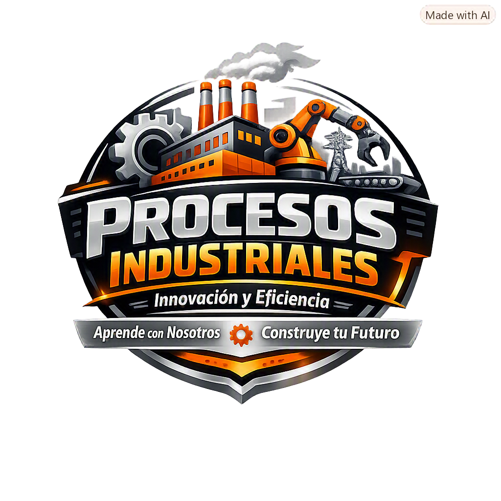

Ingeniería Industrial | Periodo Académico 2026-2
Fundamentos, Balances y Sostenibilidad
Los procesos industriales se basan en tres pilares fundamentales que se interrelacionan:
"Lo que entra debe salir o acumularse". Base cuantitativa para el diseño y operación de plantas.
"La energía se conserva pero se degrada". Determina requerimientos de calor, trabajo y eficiencia.
"Producir sin destruir". Minimizar impacto ambiental optimizando recursos.
El error común en la industria peruana: No aplicar balances de materia y energía sistemáticamente. Esto genera:
Definición Formal: Etapas del proceso donde la materia experimenta cambios físicos sin alterar su composición química molecular. No hay reacciones químicas involucradas.
Definición Formal: Etapas donde la materia sufre una transformación química o bioquímica que altera su estructura molecular para obtener productos de interés con propiedades diferentes a los reactivos.
Una planta de cobre combina OU y PU en secuencia:
Definición Matemática: Las variables del proceso (presión, temperatura, composición, flujos) NO cambian con el tiempo en ningún punto del sistema.
Condición: $\frac{d(\text{variable})}{dt} = 0$ para todas las variables.
Consecuencia en Balances: Acumulación = 0
Ejemplo: Una refinería operando normalmente a producción constante.
Definición Matemática: Las variables SÍ cambian con el tiempo.
Condición: $\frac{d(\text{variable})}{dt} \neq 0$
Consecuencia en Balances: Acumulación ≠ 0 (puede ser positiva o negativa)
Ejemplos: Arranque de planta, Parada de emergencia, Llenado/vaciado de tanques, Cambio de tasa de producción.
Descripción: Las unidades de proceso están conectadas secuencialmente. El producto de una unidad es la alimentación de la siguiente.
Modelo: Entrada → [Unidad 1] → [Unidad 2] → [Unidad 3] → Salida
Característica crítica: Si una unidad falla, TODA la línea se detiene.
Descripción: El flujo se divide en ramas independientes que operan simultáneamente.
Modelo: Entrada → {[Unidad A] + [Unidad B]} → Mezcla → Salida
Ventaja: Aumenta la capacidad total. Si una unidad falla, las otras continúan operando (con menor capacidad).
Descripción: Parte del flujo de salida se devuelve a la entrada del proceso o a una etapa intermedia.
Objetivos:
Ejemplo: En una planta de amoníaco, los gases no convertidos (N₂ + H₂) se recirculan al reactor para aumentar el rendimiento.
Problema: En sistemas con recirculación, los componentes inertes o impurezas se acumularían infinitamente.
Solución: Se extrae una pequeña corriente (purga) para eliminar estos componentes acumulados.
Modelo: [Recirculación] → [Purga (5-10%)] → El resto recircula
Ejemplo: En la síntesis de amoníaco, se purga argón y metano que entran con el aire y gas natural.
Descripción: El flujo se divide antes de una unidad; una parte pasa por la unidad y otra la evita, mezclándose después.
Objetivo: Controlar propiedades del producto final (temperatura, concentración, humedad) sin modificar la operación de la unidad principal.
Ejemplo: En un intercambiador de calor, parte del fluido frío bypassa el intercambiador para controlar la temperatura de salida.
Primera Ley de la Termodinámica aplicada a procesos: "La materia y la energía no se crean ni se destruyen, solo se transforman".
Ecuación Maestra (para cualquier componente o masa total):
$$ \boxed{Acumulación = Entrada - Salida + Generación - Consumo} $$
Donde:
Caso A: Estado Estable SIN Reacción Química
Caso B: Estado Estable CON Reacción Química
Caso C: Estado No Estable (Transitorio) SIN Reacción
Primera Ley de la Termodinámica (Sistema Abierto - Volumen de Control):
$$ \frac{dE_{sistema}}{dt} = \dot{Q} - \dot{W} + \sum \dot{m}_{in} h_{in} - \sum \dot{m}_{out} h_{out} $$
Donde:
Aunque la cantidad de energía se conserva (1ra Ley), la calidad de la energía disminuye en cada transformación. Parte de la energía útil se disipa como calor de baja temperatura no aprovechable (aumento de entropía).
Implicación práctica: Ningún proceso es 100% eficiente. Siempre hay pérdidas.
Capacidad de producir bienes y servicios minimizando el impacto ambiental, optimizando el uso de recursos naturales y energía, garantizando viabilidad económica y asumiendo responsabilidad social.
En todo balance de materia, debemos identificar y clasificar:
Lo que queremos maximizar/recuperar:
Lo que queremos minimizar/eliminar:
Objetivos cuantitativos a optimizar:
Herramientas para reducir la carga cognitiva, memorizar fórmulas y evitar errores de unidades.
"**A** **E**studiantes **S**iempre **G**anan **C**onocimiento"
Acumulación = Entrada - Salida + Generación - Consumo
1. Prevenir → 2. Reducir → 3. Reciclar → 4. Tratar → 5. Disponer
Mnemotecnia: "Pedro Robó Rosas Todas Domingo"
En procesos de secado o evaporación, el componente sólido NO se evapora ni se destruye.
Estrategia: "Haz el balance al sólido primero"
$Entrada_{sólido} = Salida_{sólido}$
$(Masa_{total} \times \%_{sólido})_{entrada} = (Masa_{total} \times \%_{sólido})_{salida}$
Sigue este algoritmo mental para cualquier problema de la Semana 1.
Identifica: ¿Qué te dan? ¿Qué te piden? ¿Hay reacción química? ¿Es estado estable?
Dibuja una caja (frontera del sistema) alrededor del equipo. Marca todas las corrientes de entrada y salida con flechas. Numera las corrientes.
Escribe todos los flujos, composiciones, temperaturas, presiones. Convierte porcentajes a decimales. Asegura consistencia de unidades (kg con kg, h con h).
Pregúntate y escribe:
Según las hipótesis:
Despeja las incógnitas. Si hay múltiples componentes, escribe un balance por cada uno más el balance total.
Verifica:
El Error: Multiplicar $1000 \times 80$ en lugar de $1000 \times 0.80$.
Consecuencia: Error de 100 veces en el resultado.
La Solución: Siempre divide el porcentaje entre 100 antes de usarlo en una ecuación. $80\% = 0.80$
El Error: Usar flujo en kg/h con tiempo en segundos, o potencia en kW con tiempo en horas sin convertir.
Consecuencia: Error de 3600 veces.
La Solución: Escribe SIEMPRE las unidades en cada paso. Convierte todo a un sistema consistente antes de calcular. $1 \text{ h} = 3600 \text{ s}$
El Error: Intentar balancear el agua cuando hay evaporación y no se conoce el flujo de vapor.
La Solución: Usa la "Regla de Oro": Haz el balance al componente que NO se evapora ni reacciona (ej. los sólidos en un secador). Los sólidos se conservan.
El Error: Usar $Entrada = Salida$ cuando el problema dice "llenado de tanque" o "arranque".
La Solución: Si hay llenado o vaciado, hay Acumulación ≠ 0. Usa $Acumulación = Entrada - Salida$. Solo usa Entrada = Salida si explícitamente dice "estado estable" o "régimen permanente".
El Error: Asumir composiciones que no cierran el balance.
La Solución: Siempre verifica: $\sum \%_i = 100\%$ o $\sum x_i = 1.0$ (fracciones molares/másicas).
El Error: Recircular infinitamente sin extraer inertes.
La Solución: En todo sistema con recirculación, SIEMPRE hay una purga (aunque sea pequeña) para evitar acumulación de impurezas.
Haz clic en cada nodo para desplegar u ocultar sus ramas.
Haz clic en la tarjeta para voltearla. Evalúa tu dominio con los botones.
Resuelve mentalmente o en papel cada paso antes de revelarlo. Ejemplos inductivos y sencillos.
Entran 100 kg/h de agua y 50 kg/h de sal a un mezclador. No hay reacción química. ¿Cuál es el flujo de la solución de salida?
Entran 1000 kg/h de mineral húmedo (80% sólido, 20% agua). Sale mineral seco (95% sólido, 5% agua) y agua evaporada. Calcula el flujo de mineral seco y agua evaporada.
Entran 50 L/min a un tanque y salen 45 L/min. a) ¿Cuál es la tasa de acumulación? b) ¿Cuánto se acumula en 10 min? c) ¿Es estado estable?
Se calientan 100 kg/h de agua de 25°C a 85°C. El $C_p$ del agua es 4.18 kJ/kg·°C. ¿Cuánto calor ($Q$) se requiere?
Entrada: 1000 kg/h de pescado fresco (70% agua, 30% sólidos).
Proceso: Cocción → Prensado → Centrifugación (separa aceite) → Torta Húmeda → Secado → Harina de Pescado + Agua Evaporada.
Datos: La Torta Húmeda tiene 60% sólidos. La Harina de Pescado tiene 90% sólidos. (Asume que todos los sólidos van a la torta).